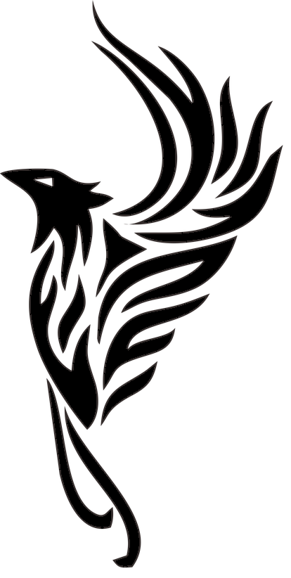
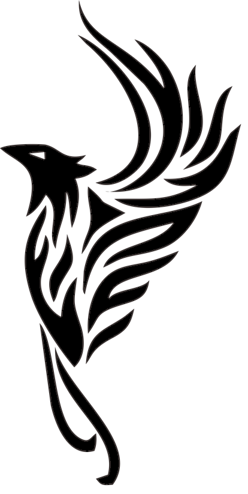
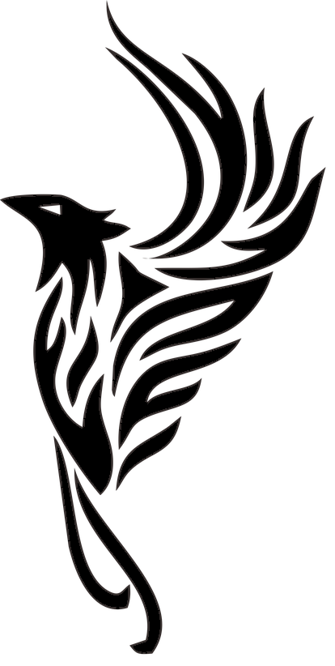
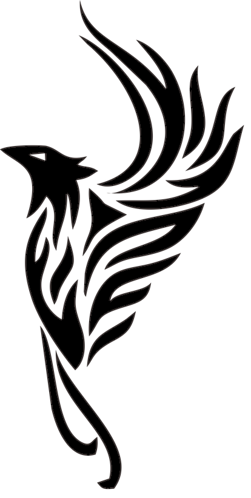

Hi my name is Robin Andersson!
I have always had a great interest in data and technology, so when
I decided to study I choosed Agile Java methods. During my
studies, I have been leading the group together with a classmate
to develop a sinking ship game in JavaFX. What interested me the
most was the graphic work involved in making the game not only
look good, but also give the game an intuitive design.
Frontend has interested me very much during my studies, which has led me to design and developed a website for a board game association called Den Stora Nyckelpigan. In group work, I like to take a leading role by structuring the work through project planning in GitHub and followed up on the group's work. My interest in programming has also led me to learn Unity in my spare time with a friend by developing a game for mobiles. I find it easy to learn and would rather see solutions than problems.
I am good at leading a group and handing out tasks to the group.
I'm good at organizing and want it structured, so I can easily get a good view.
I can work with github and have been the one who took care of it during group work. Been responsible for putting together the branches and I have made the pulls.
My goal in programming is to gain as much experience as I can and
then work on making games for consoles and PC.
ANother goal I have is to gain experience with frontend which I
enjoy to work with.
© Robin Andersson All rights reserved.